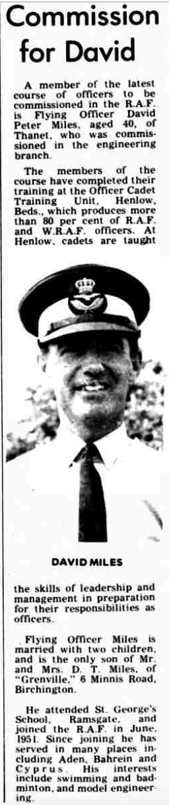

David Peter Miles 1930 - 1980
[ Home ] | [ Calendar ] | [ Surnames Index ] | [ Errors ] | [ Family History ]The child of Thomas Miles and Elsie Edwards, David Miles, the third cousin once-removed on the mother's side of Nigel Horne, was born in Thanet, Kent, England on 2 Dec 19301,2,3.
During his life, he was living at 194 Grange Road, Ramsgate, Kent, England on 29 Sept 19391 - less than a mile from his great-uncle Sydney Edwards who was living at 105 Whitehall Road in Ramsgate; and at 2 The Oval, Henlow, Bedfordshire, England in 1980.
He died on 7 Jul 1980 in Biggleswade, Bedfordshire, England3,4.
Parents
- Thomas D
- Elsie Elizabeth was born on 13 Aug 1903
Citations
- 1939 Register - Findmypast (was the son of the head of the household)
- England & Wales births 1837-2006 - Findmypast
- England & Wales deaths 1837-2007 - Findmypast
- England & Wales Government Probate Death Index 1858-2019 - Findmypast
Media
Thanet Times - July 6, 1971

David Peter Miles
1939 Register - TNA/R39/1765/1765E/011/42
England & Wales births 1837-2006 - BMD/B/1931/1/AZ/000802/065
England & Wales deaths 1837-2007 - BMD/D/1980/3/AZ/000691/068
England & Wales Government Probate Death Index 1858-2019 - GBOR/GOVPROBATE/C/1981-1981/00147579
Family Tree
Map
Generated by ged2site. Last updated on Jul 3, 2024
Known Issues
Residence record for 1980 contains no citation